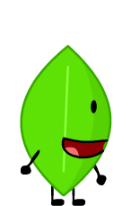
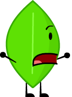
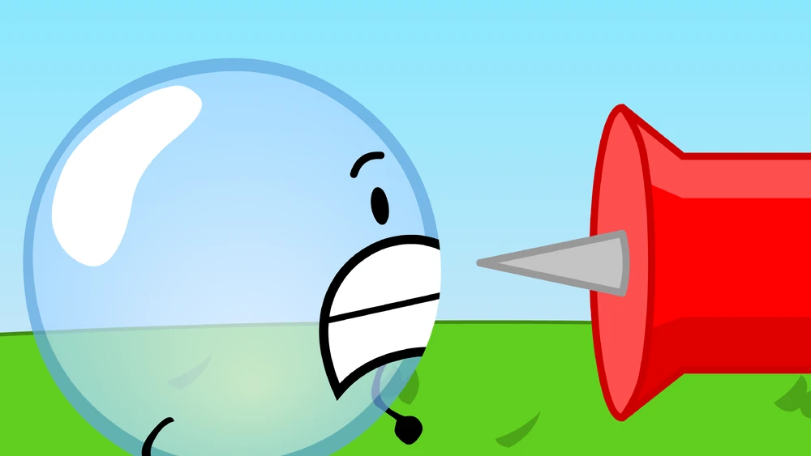
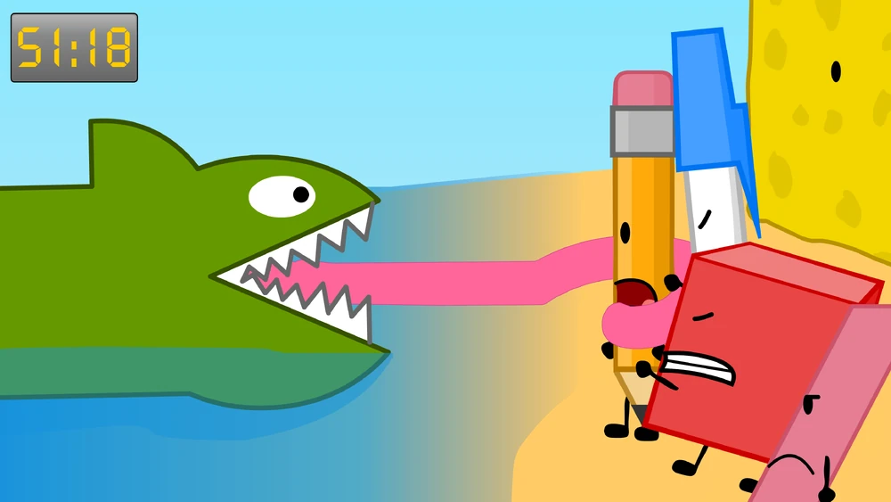
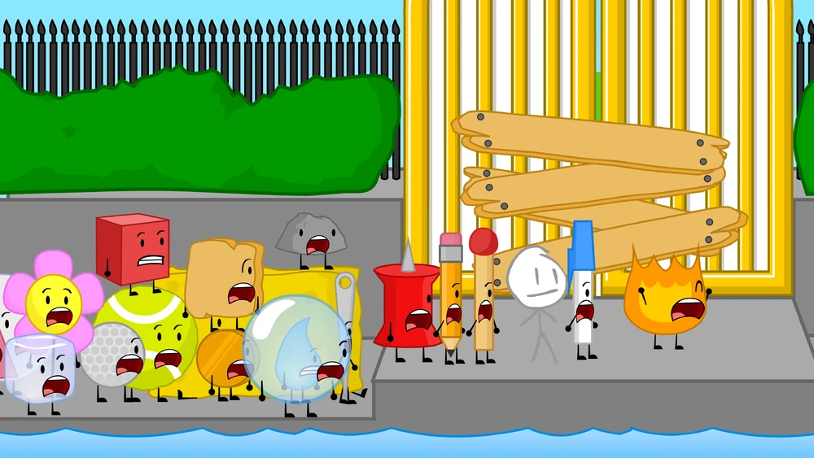
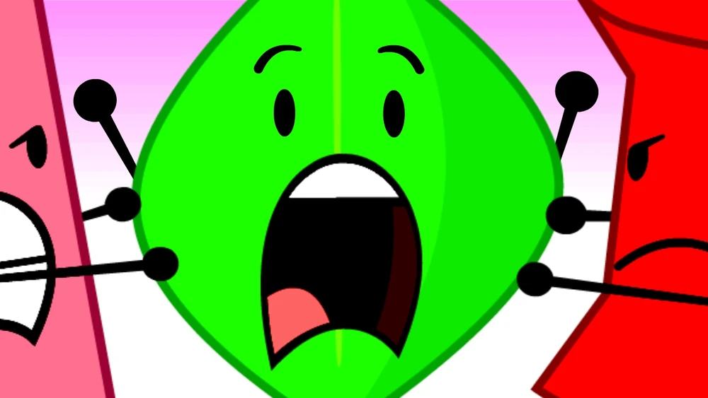

Battle For Dream Island's style has a vibrant style filled with a very solid, distinct color palette.
Goiky, the fictional location where BFDI takes place,
is very barren, despite the solid green grass everywhere.
There are only a handful of trees surrounding the place,
and besides the props that the Announcer (Host of BFDI)
used for their competitions, there's nothing to see there.
The objects in the show use smooth eyes, mouth, and limb assets. The show rotates, transforms, and swaps these assets in a sequence to give the objects animation. The body parts consists of basic shapes like ovals for the eyes, circles for the hands, and halved ovals for the feet. (post-BFDI 8)
In BFDI 9: Insectophobe's Nightmare, they started using newer, more refined limb assets, replacing the more handdrawn assets used since the beginning of the show (see table below). They kept using these assets until Battle for BFDI, when the creators opted for a handdrawn approach to the limbs, mouth, and eyes.
| Difference between BFDI 1 and BFDI 9 assets | |
|---|---|
|  |  |
| Leafy in BFDI 1: Take The Plunge | Leafy in BFDI 9: Insectophobe's Nightmare |
BFDI used to use the auto-generated thumbnails from YouTube, but in early 2017, they changed the thumbnails of every single BFDI and BFDIA episode.
The new thumbnails changed to a more saturated, colorful style, similar to the thumbnails of Battle for BFB (Season 4b). It also reflected the events that happened within the show.
| Difference between BFDI Thumbnails pre-2017 and post-2017 | |
|---|---|
| Old Thumbnail | New Thumbnail |
|

BFDI 1: Take The Plunge |
BFDI 1: Take The Plunge |
|

BFDI 2: Barriers And Pitfalls |
BFDI 2: Barriers And Pitfalls |
|

BFDI 25: Return of the Hang Glider |

BFDI 25: Return of the Hang Glider |